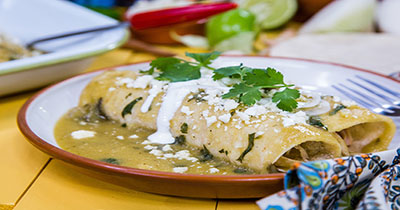

My Favorite Food
Mexican Enchiladas
This is the best recipe you will ever make!

Ingredients
- tortillas
- chile de arbol,black pepper
- chicken breast cooked and shredded
- tomatos,onion,garlic,lettuce
- sour cream
- queso fresco
- cilantro
- salt
Directions
- Blend the tomato, onion, garlic, chilies and water to obtain a liquid consistency.
- Strain the sauce, fry in a pan and season with salt and pepper.
- Soak the tortillas in the sauce, fill each tortilla with chicken and sauté.
- Decorate the enchiladas with lettuce, sour cream and cheese.
For more information check out
https://us.kiwilimon.com/recipe/breakfasts/mexican-breakfasts/enchiladas/red-enchiladas-with-chicken